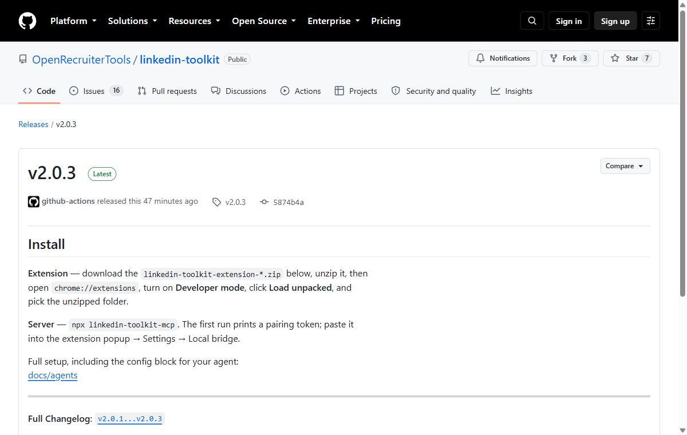
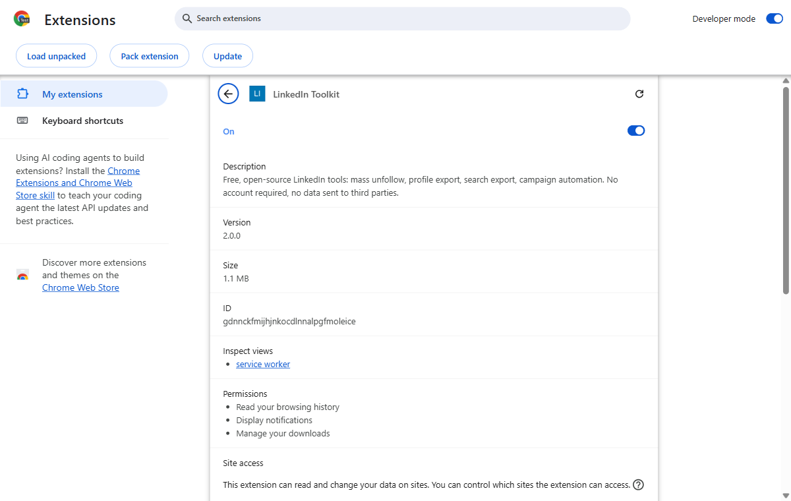
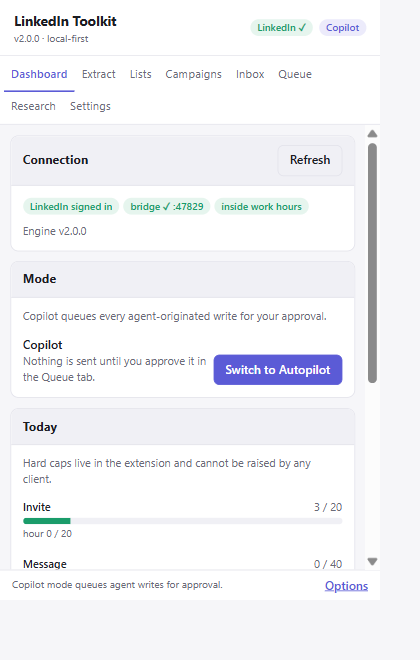

You stay connected to everyone. Unfollowing is not disconnecting — your connections stay connections, you just stop seeing their posts, and your feed goes quiet.
Install it
Three steps, about two minutes. It is not on the Chrome Web Store — here is why. The screenshots come from LinkedIn Toolkit, the bigger project this was carved out of; Chrome's side of the process is identical, only the name on the card differs.
1 Download the zip and unzip it
Take linkedin-unfollow.zip from the
latest release
and unzip it somewhere you will keep it. Chrome loads the extension from that folder every
time it starts, so do not leave it in Downloads and then empty Downloads.

2 Open chrome://extensions and turn on Developer mode
Type that address in by hand — it will not come up in search results. The switch is in the top-right corner.

3 Click "Load unpacked", pick the folder, pin the icon
Pick the folder itself — the one holding manifest.json, not a file inside it.
Then click the jigsaw-piece icon in the toolbar and pin LinkedIn Unfollow. Sign in to
LinkedIn as normal and click the icon.


Then: preview, try one, run it
- Check count — how many accounts you follow. Changes nothing.
- Preview — the list of people it would unfollow, read by exactly the same call. Sends no unfollow at all.
- Unfollow — set "Unfollow up to" to 1 first, run it, and check that person really is unfollowed. Then set it to 25, or 500, or clear the box for everyone.
While it runs there is a progress line and a Stop button, which ends the run after the person it is on. 800 people takes roughly fifteen minutes, and you can close the popup while it works.
How it works, and where it stops
It sends the same two requests linkedin.com's own "Following" page sends, from your own signed-in browser. The count is LinkedIn's own total, so it is the real number rather than a count of rows on screen.
- Paced like a human. One person every 0.8–1.6 seconds, randomised, one request at a time. Never a burst.
- Stops on any LinkedIn challenge. 429, 451, 401 and 403 end the run on the spot, and so do two failures in a row. Nothing is ever retried.
- Never more than you asked for. The limit is enforced in the engine, and you can stop a run at any point.
-
Nothing leaves your browser. No account, no server, no analytics, no
telemetry, no third-party requests of any kind. The only host it talks to is
www.linkedin.com, with your own cookies. - Nothing is bypassed. It uses your own session, at a fraction of the rate a person clicking could manage. No security measure is defeated or worked around — when LinkedIn puts up a challenge, it stops.
- You can read all of it. About 1,800 lines, no build step, MIT licensed. What you install is what is in the repository.
Questions
Is this against LinkedIn's terms?
Yes — automating your account is. LinkedIn's User Agreement prohibits using bots or other automated methods to access the service, and LinkedIn restricts and permanently bans accounts for it. This tool does not pretend otherwise. Use it on your own account, with your eyes open, or do not use it.
Does it bypass any security measure?
No. It sends the requests the page itself sends, signed with your own session cookie, more slowly than a person clicking could manage. It does not defeat rate limits, solve challenges, rotate identities, or touch anyone else's account.
Will I lose my connections?
No. Unfollowing is not disconnecting. Your connections stay connections; you just stop seeing their posts, and you can follow anyone again by hand.
Can I undo it?
No — not in bulk. Unfollowing 800 people would have to be reversed 800 times by hand. That is exactly why Preview, and a limit of 1, exist. Use them.
Do you see any of my data?
No. There is nothing to see it with: no account, no backend, no analytics.
Why is it not in the Chrome Web Store?
Store policy forbids extensions that facilitate breaking another site's terms of service, and an honest reading of LinkedIn's terms puts automating your own account in that territory. Loading it unpacked keeps the decision — and the code you are running, which you can read — with you.
Before you install it
Automating your LinkedIn account may breach LinkedIn's User Agreement. LinkedIn detects automation and restricts, suspends and permanently bans accounts for it, including accounts that have done nothing else wrong. That risk is entirely yours. The pacing and the stop conditions here reduce it; nothing removes it.
This software is provided as is, without warranty of any kind. The author is not responsible for any restriction, suspension or loss of your LinkedIn account, for any people you unfollow and cannot get back, or for any other consequence of running it. It performs an irreversible bulk action on your own account: preview first, try one, and never run it against an account you cannot afford to lose. It is for your own account only.